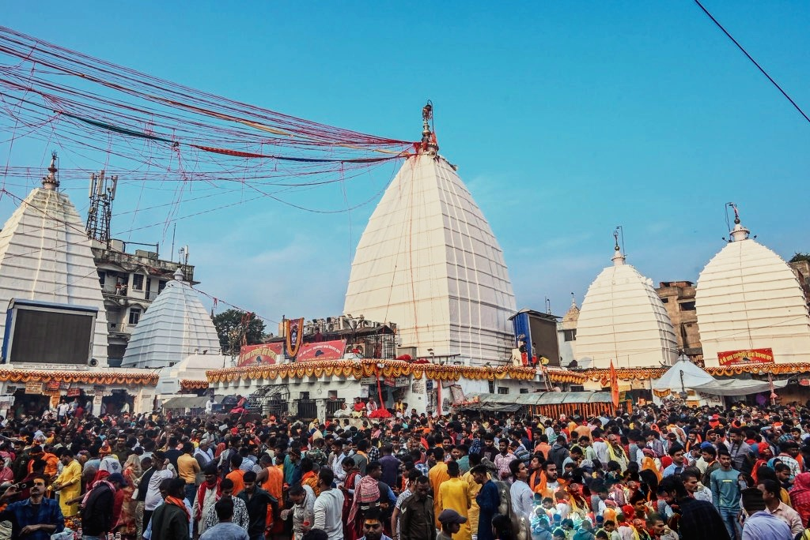

Sthala Puranam
Deoghar in Jharkhand, called Baidyanath Dham, is one of the principal modern seats of the Baidyanath Jyotirlinga. The name means 'Lord of Physicians' (Vaidya = healer), and the shrine is revered in the healing aspect of Shiva.
Explanation
According to the tradition of the region, the demon-king Ravana, in his devotion, asked Shiva where to install a lingam; Shiva directed him to carry a special lingam, for which Ravana was to wait while his previous worship was concluded. The eager Ravana, pressing the lingam into the earth at Deoghar to rest, found it immovably planted and worshipped it there where it stood. The same story belongs to several healing shrines across India; in the modern Jyotirlinga list, Deoghar is most often named (while Parli-Vajjanath is named in some traditions). The temple, built of imposing stone, is surrounded by fifty-two or so subsidiary shrines, and its near holy water tank is essential to the ritual bath.
Why the temple is revered
'Paralya Vaidyanatham' — the stotram chants the physician Lord. Baidyanath is revered as the giver of health, the healer who relieves suffering of body and mind, and the Shravana Monday gatherings of the temple are among the great festival crowds of eastern India. Pilgrims come precisely to be cured.
🕉 Story
The Vaidyanath tradition connects Shiva with the healing aspect of the divine.
✨ Significance
Deoghar is the most commonly represented modern location in many Jyotirlinga pilgrimage lists, although Parli in Maharashtra also has a traditional claim.